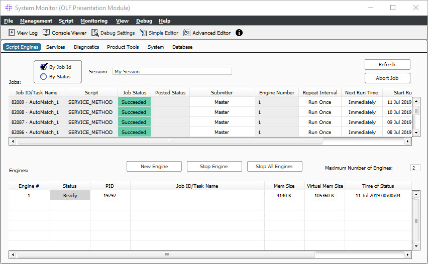

The Script Engines Monitor is an instrument provided for the observation of script engine operations. The Jobs panel shows details about the jobs that ran, and are running, on this machine. The data table may be sorted and includes the functionality to abort jobs. The Engines panel contains details about the engine or engines that are running. This panel includes the functionality to start new engines and stop existing engines.
Notes:
1) This tab is disabled if the System Monitor is not started from OpenLink Central
2) Script Engines start only when needed, such as when running a plug-in/script. Engines are started based on one of the following 2 conditions:
a. No script engines have been started
b. All the script engines that have been started are busy performing work
3) The maximum number of script engines that can be run concurrently during a single session is 1 client and 2 server nodes, and in v18 and above, by default, zero script engines on server node. This number of script engines is determined by licensing. This number of script engines can be modified via the environment variable “MAX_TASK_ENGINES”. Note that the number of allotted script engines has been reduced (After August 2008) to standardize functionality using OpenLink's Grid solution.
4) Script Engines terminate only when the user exits the system. Memory is released only when a script engine terminates.
5) Individual scripts may be modified to terminate the script engine upon completion of the script. This is achieved by placing the function “EXIT_Terminate” in the script.
The maximum number of script engines that can be run concurrently during a single session is 1 client and 2 server nodes, and in v18 and above, by default, zero script engines on server node.
The following screen displays:

This window contains the same menu items as the System Monitor.
This window contains the same buttons as the System Monitor.
This panel contains the following buttons:
Button |
Description |
A radio button that when selected, sorts the jobs by “Job ID/Task Name”. |
|
A radio button that when selected, sorts the jobs by “Job Status”. |
|
A pick list of active sessions. |
|
Refreshes and updates the statuses of the jobs. |
|
Terminates the selected job. |
This panel contains the following fields:
Field Item |
Description |
Job Id/ Task Name |
A system assigned job identification number. This field includes the plug-in/script Task name when a task is run. |
Script |
The name of the script being executed when running a task. Typically, this is the main script as the parameter script is run in the calling process, not in the script engine. |
Job Status |
The current status of a job. |
Posted Status |
The last posted status of a job. Posted statuses are recognized when the SCRIPT_PostStatus function is called in the script. |
Submitter |
The name of the system manager where the job was initiated. |
Engine Number |
The number of the engine to which the job is currently assigned. |
Repeat Interval |
The frequency with which the job will be repeated. |
Next Run Time |
The point at which the job will run again, if scheduled. |
Start Run Time |
The calendar date and clock time that the job began running. |
End Run Time |
The calendar date and clock time that the job finished running. |
This panel contains the following buttons:
Button |
Description |
Initializes a new engine. |
|
Stops the selected engine. |
|
Stops all running engines. |
This panel contains the following fields:
Field Item |
Description |
Maximum Number of Engines |
The maximum number of engines (screng) available to run scripts/tasks. The system maximum is 4 engines per runsite. |
Engine Number |
The system assigned identification number of the selected engine. |
Status |
The current system status of the selected engine. |
PID |
The operating system process ID of the engine running the script/task (screng.exe). |
Job ID |
The system assigned job identification number that is currently running on the selected engine. |
Memory Size |
The operating system memory size for the process (screng.exe). |
Virtual Mem Size |
The operating system virtual memory size for the process (screng.exe). |
Time Of Status |
The time the engine status changed. |
JVM Initialized |
An indicator as to whether the script engine is enabled for Java scripting. |
JVM Debug Port |
The port for which Java scripting debugging can be accessed. |